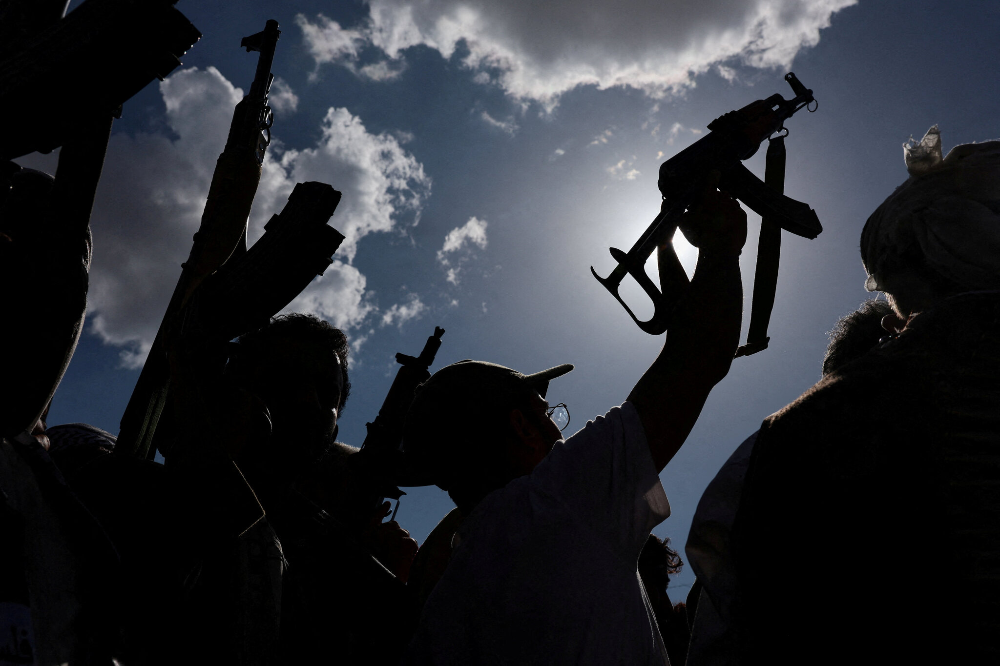
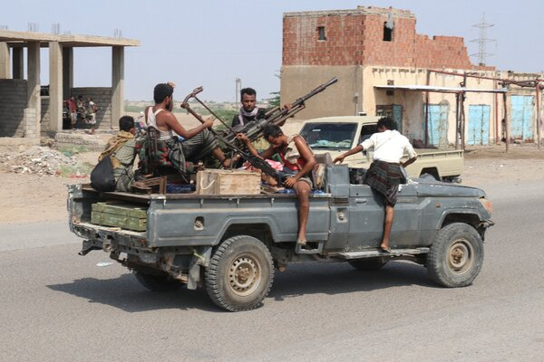

After four years of stalemate, Yemen is teetering on the verge of all-out war again, further threatening the stability of the Middle East.
Fighting is escalating inside the impoverished country between the Iran-backed Houthi militia and Yemeni government forces — as well as across its borders, between the Houthis and Saudi Arabia. Analysts say that all sides have an incentive to ramp up the conflict.

The Houthis want more power and resources
The Houthis are close Iranian allies, but they are also a distinctly Yemeni faction with their own motivations.
The group of fighters rose to power after they seized the capital, Sanaa, in 2014, routing the Yemeni government. Saudi Arabia began a bombing campaign to try to restore the government to power, and fighting engulfed the country.
When a truce was reached in 2022, the Houthis said they had won the war and entrenched their rule over northern Yemen. But they didn’t have access to Yemeni oil revenue, and peace talks that might have given them a share have stalled. Since then, the economic situation in areas under Houthi control has worsened, increasing civilian resentment and putting political pressure on the group, analysts say.
The militia has little to lose and much to gain from escalating the fight. By placing pressure on Saudi Arabia, Houthi leaders hope to win political concessions that could give the group greater power. They have demanded the lifting of all restrictions on planes and ships entering Houthi territory, including a U.N. inspection regime. They have also insisted that Saudi Arabia pay war reparations and fully withdraw from Yemen — meaning the end of Saudi support for the Yemeni government.
“The Houthis have no incentive to de-escalate,” said Ibrahim Jalal, a Yemeni researcher and policy adviser. They blame Saudi Arabia for the suffering in their territory, he added.
Iran wants to increase pressure on the U.S.
For Iran, the Houthis are a particularly useful ally because the militia controls territory along the Red Sea, a key global trade route. Since the U.S.-Iran war began in February, Saudi Arabia, one of the world’s largest oil exporters, has been shipping much of its oil to customers via the Red Sea to avoid the Strait of Hormuz, which Iran has effectively choked off.
In July, the Houthis declared a blockade on Saudi shipping through the Red Sea, threatening that new route and pushing up oil prices.
Disrupting the global economy and increasing gas prices in the United States are among the most effective ways for Iran to exert leverage over Mr. Trump, analysts say.
Iran is counting on escalation in Yemen to drag the United States deeper into the regional war and “put more pressure on the Trump administration,” said Baraa Shiban, a researcher on Yemen and the Gulf at the Royal United Services Institute, a research organization based in London.

The Yemeni government sees a chance to reclaim territory
The internationally recognized government of Yemen is eager to beat back the Houthis and retake the entire country. But for several years that prospect had seemed out of reach. The government depends heavily on Saudi Arabia for financial and military support, and Saudi Arabia did not want another war with the Houthis.
“For a long time, it was the Saudis who were stifling them, because they were prioritizing containment,” said Ahmed Nagi, a senior analyst for Yemen at the International Crisis Group.
Now, as the Houthis step up attacks against Saudi interests, Yemeni government officials see the stars aligning for a counteroffensive against the militia. A year ago, the government forces consisted of a motley assortment of anti-Houthi factions with disparate commands and motivations. Saudi Arabia has pushed recently to unify those forces and has stepped up military support, analysts say.
The government would ideally like to recapture all of Yemen, Mr. Jalal said. More realistically, the government forces seek to “weaken the Houthis significantly” and push them away from territory along Yemen’s Red Sea coast, he said.
The government’s ambitions could still be constrained, because Saudi Arabia exerts a final say over major decisions affecting Yemen. A major military campaign by the Yemeni government “cannot happen without fully coordinating an operation with Saudi Arabia,” said Mr. Shiban.
Saudi Arabia believes it cannot afford to stand aside
Saudi Arabia’s previous bombing campaign in Yemen turned into a quagmire that contributed to the deaths of hundreds of thousands of Yemenis from violence, hunger and disease. The campaign did not achieve its political goals. It also damaged the kingdom’s reputation and drained its finances.
So Saudi officials changed their approach. Since 2022, they have sought to manage the Houthis through negotiations, hoping to maintain quiet on the kingdom’s southern border and decouple the militia’s interests from Iran’s. Renewed conflict would endanger the Saudi crown prince’s ambitious plans to turn the kingdom into a global business and tourism hub.
But increasingly, Saudi officials seem to believe they must confront the Houthis now or face greater costs later, analysts say. Saudi Arabia plans to host the World Expo in 2030 and the men’s soccer World Cup in 2034, major events that require a climate free of drone attacks. Diplomatic channels between Saudi Arabia and the Houthis appear to have broken down, and the Houthis are making demands that Saudi officials view as excessive.
“The Saudis have a growing kind of belief that peace with the Houthis is impossible,” said Farea Al-Muslimi, a Yemen specialist at Chatham House, a research institution in London. “They try to buy them, they try to bomb them, they try to fight them, they try to visit them, they try to invite them. None of this has worked.”
How far Saudi Arabia goes could depend on whether the United States or other Saudi allies are willing to back another war against the Houthis.
Some analysts fear the worst.
“There’s a lot of people who are excited for it or think that this will be a quick and fast war, but I have heard that line about almost every war in Yemen,” said Mr. Al-Muslimi. “This is going to be a bloody, horrible war.”